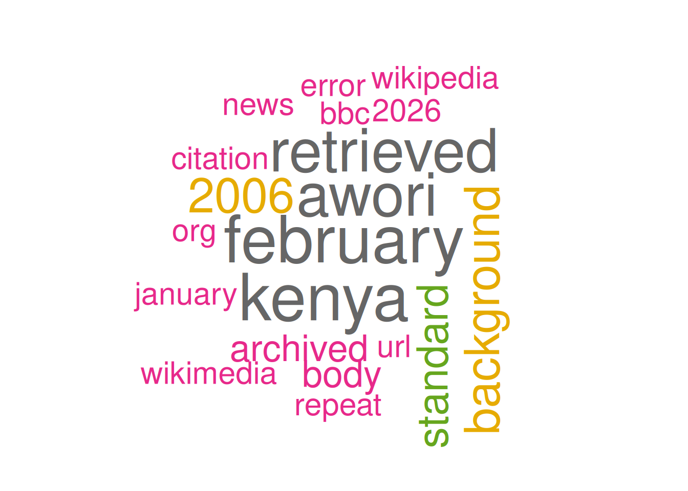
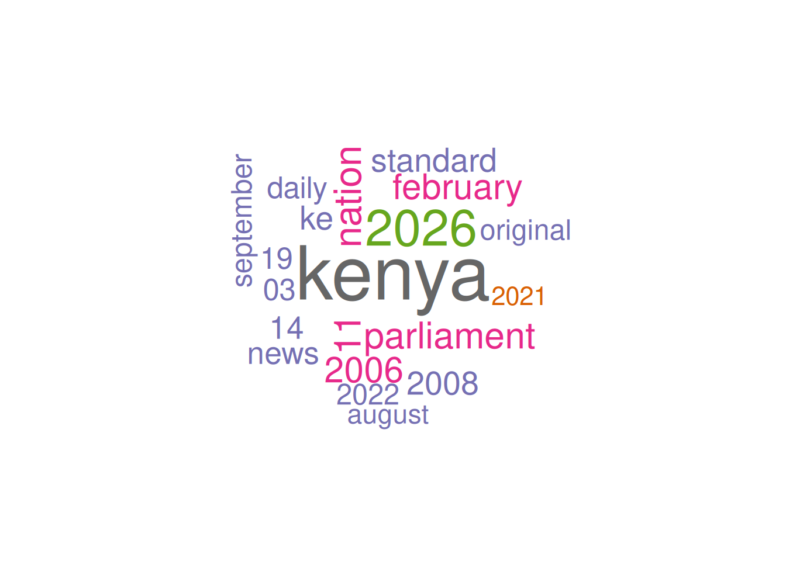

We start by installing and loading the necessary libraries. We will use the rvest, which is part of the tidyverse set of libraries which you have likely already installed as part of the other SICSS instructions. If not, you can install just rvest using install.packages("rvest") before loading it. For other steps you’ll also need the wordcloud and tidytext libraries, which you can install as below:
── Attaching core tidyverse packages ──────────────────────── tidyverse 2.0.0 ──
✔ dplyr 1.2.1 ✔ readr 2.2.0
✔ forcats 1.0.1 ✔ stringr 1.6.0
✔ ggplot2 4.0.3 ✔ tibble 3.3.1
✔ lubridate 1.9.5 ✔ tidyr 1.3.2
✔ purrr 1.2.2
── Conflicts ────────────────────────────────────────── tidyverse_conflicts() ──
✖ dplyr::filter() masks stats::filter()
✖ dplyr::lag() masks stats::lag()
ℹ Use the conflicted package (<http://conflicted.r-lib.org/>) to force all conflicts to become errors
library(rvest)
Attaching package: 'rvest'
The following object is masked from 'package:readr':
guess_encoding
In the last instructions, we created a CSV file (kenyan_politicians.csv), which has the names of the Wikipedia pages we want to scrape. We start by loading this file:
With the html now parsed, we can try to traverse the nodes of the file, to find the references of the page. If we look at an example of a Wiki page, we can see that those will be in a <section> tag, that will be labelled by aria-labelledby="References". Let’s try to see if we can get that section of the page:
ref_section <- html %>%html_elements(xpath="//section[contains(@aria-labelledby, 'References')]")ref_section
[1] "Profile of Moody Arthur Awori"
[2] "Page on Awori at Vice-President web site Archived 2007-09-27 at the Wayback Machine."
[3] "\"Awori Hands Over to Kalonzo\", The East African Standard, 10 January 1998."
[4] "Kenya Government Bio Archived 2005-07-28 at the Wayback Machine."
[5] ".mw-parser-output cite.citation{font-style:inherit;word-wrap:break-word}.mw-parser-output .citation q{quotes:\"\\\"\"\"\\\"\"\"'\"\"'\"}.mw-parser-output .citation:target{background-color:rgba(0,127,255,0.133)}.mw-parser-output .id-lock-free.id-lock-free a{background:url(\"//upload.wikimedia.org/wikipedia/commons/6/65/Lock-green.svg\")right 0.1em center/9px no-repeat}.mw-parser-output .id-lock-limited.id-lock-limited a,.mw-parser-output .id-lock-registration.id-lock-registration a{background:url(\"//upload.wikimedia.org/wikipedia/commons/d/d6/Lock-gray-alt-2.svg\")right 0.1em center/9px no-repeat}.mw-parser-output .id-lock-subscription.id-lock-subscription a{background:url(\"//upload.wikimedia.org/wikipedia/commons/a/aa/Lock-red-alt-2.svg\")right 0.1em center/9px no-repeat}.mw-parser-output .cs1-ws-icon a{background:url(\"//upload.wikimedia.org/wikipedia/commons/4/4c/Wikisource-logo.svg\")right 0.1em center/12px no-repeat}body:not(.skin-timeless):not(.skin-minerva) .mw-parser-output .id-lock-free a,body:not(.skin-timeless):not(.skin-minerva) .mw-parser-output .id-lock-limited a,body:not(.skin-timeless):not(.skin-minerva) .mw-parser-output .id-lock-registration a,body:not(.skin-timeless):not(.skin-minerva) .mw-parser-output .id-lock-subscription a,body:not(.skin-timeless):not(.skin-minerva) .mw-parser-output .cs1-ws-icon a{background-size:contain;padding:0 1em 0 0}.mw-parser-output .cs1-code{color:inherit;background:inherit;border:none;padding:inherit}.mw-parser-output .cs1-hidden-error{display:none;color:var(--color-error,#bf3c2c)}.mw-parser-output .cs1-visible-error{color:var(--color-error,#bf3c2c)}.mw-parser-output .cs1-maint{display:none;color:#085;margin-left:0.3em}.mw-parser-output .cs1-kern-left{padding-left:0.2em}.mw-parser-output .cs1-kern-right{padding-right:0.2em}.mw-parser-output .citation .mw-selflink{font-weight:inherit}@media screen{.mw-parser-output .cs1-format{font-size:95%}html.skin-theme-clientpref-night .mw-parser-output .cs1-maint{color:#18911f}}@media screen and (prefers-color-scheme:dark){html.skin-theme-clientpref-os .mw-parser-output .cs1-maint{color:#18911f}}reporter, Nairobian. \"The Immortals:Why the Aworis are the Kennedys of Kenya\". Standard Entertainment and Lifestyle. Retrieved 23 May 2021."
[6] "\"\"Kibaki's new cabinet\"\". Archived from the original on 16 January 2006. Retrieved 20 February 2006., The Standard (Kenya)."
[7] "\"Inside one famous family of scholars and top leaders\". Nation. 5 July 2020. Retrieved 28 July 2023."
[8] "\"Kenya Women Billionaires: The Story of Mary Okello - Kenyans.co.ke\". www.kenyans.co.ke. 5 October 2021. Retrieved 28 July 2023."
[9] "\"Prof. NO Awori, May 1986 - Nov 1986\". University of Nairobi - Department of Surgery."
[10] "Amalemba, Robert. \"Former VP Awori wins back late kin's 30-acre land from trespasser\". The Standard. Retrieved 21 February 2026."
[11] "\"Old boys\". Kakamegahighschool.com. Archived from the original on 9 October 2011. Retrieved 4 August 2011."
[12] "Kenya Parliament profile Archived 2006-04-14 at the Wayback Machine."
[13] "\"Reviews under way in Kenya vote\", BBC News, 30 December 2007."
[14] "\"Kalonzo VP in Kibaki’s new Cabinet\", The Standard, 9 January 2008."
[15] "Mutinda Mwanzia, \"Kenya: Awori Hands Over to Kalonzo\", The East African Standard, 10 January 2008."
[16] "\"Travel ban in Kenya scam inquiry\", BBC News, 14 February 2006."
[17] "\"Kenyans demand more graft scalps\", BBC News, 17 February 2006."
[18] "Nzau Musau, \"Groups declare war on Awori\", Kenya Times, 22 February 2006."
[19] "\"Kenyan VP passes buck over graft\", BBC News, 22 February 2006."
[20] "\"Association for the Physically Disabled of Kenya ( Home\". 3 August 2019. Retrieved 21 February 2026."
[21] "\"Moody Awori: Vice President Who Ensured Prisoners Were Treated With Dignity, His Rich Legacy - whownskenya\". 27 February 2023. Retrieved 22 February 2026."
[22] "\"President Kenyatta defends appointing 91-year-old Moody Awori\". Citizen Digital. 6 December 2018. Retrieved 21 February 2026."
This gives us the citations, but you see that there is some HTML formatting left, due to the way Wikipedia citations work depending on the template being used. This would require further processing, but we can leave this for future improvements (and highlights the issue with web scraping generally).
Doing some basic NLP
We can now use tidytext and wordcloud to first tokenize the references and explore what the most common words are for the given page:
library(tidytext) # for NLPlibrary(wordcloud) # to render wordclouds
references n
1 mw 24
2 output 23
3 parser 23
4 lock 15
5 id 12
6 skin 12
There’s still some of the problematic labels left from the way Wikipedia does the citation markup, we can manually remove some more by creating our own filter list:
references n
1 february 10
2 kenya 10
3 awori 9
4 retrieved 9
5 2006 7
6 background 7
With this, we can now create a word cloud:
# define a color palette to not just use black as uniform labelpal <-brewer.pal(8,"Dark2")# plot the 20 most common wordstokens_clean %>%with(wordcloud(references, n, random.order =FALSE, max.words =20, colors=pal))

We see there’s still some artifacts coming from the way we extracted the text, let’s try to do better by re-doing the citation extraction, but this time making sure we don’t end up with the markup text for some references:
# get all references, including the ones that have the markup included:references <- ref_section %>%html_elements(xpath="//ol/li//span[contains(@class, 'reference-text')]") %>%html_text2()references <-as.data.frame(references)# ignore rows that contain MW outputreferences <- references %>%filter(!str_detect(references, "mw-parser"))references
references
1 Profile of Moody Arthur Awori
2 Page on Awori at Vice-President web site Archived 2007-09-27 at the Wayback Machine.
3 "Awori Hands Over to Kalonzo", The East African Standard, 10 January 1998.
4 Kenya Government Bio Archived 2005-07-28 at the Wayback Machine.
5 ""Kibaki's new cabinet"". Archived from the original on 16 January 2006. Retrieved 20 February 2006., The Standard (Kenya).
6 "Inside one famous family of scholars and top leaders". Nation. 5 July 2020. Retrieved 28 July 2023.
7 "Kenya Women Billionaires: The Story of Mary Okello - Kenyans.co.ke". www.kenyans.co.ke. 5 October 2021. Retrieved 28 July 2023.
8 "Prof. NO Awori, May 1986 - Nov 1986". University of Nairobi - Department of Surgery.
9 Amalemba, Robert. "Former VP Awori wins back late kin's 30-acre land from trespasser". The Standard. Retrieved 21 February 2026.
10 "Old boys". Kakamegahighschool.com. Archived from the original on 9 October 2011. Retrieved 4 August 2011.
11 Kenya Parliament profile Archived 2006-04-14 at the Wayback Machine.
12 "Reviews under way in Kenya vote", BBC News, 30 December 2007.
13 "Kalonzo VP in Kibaki’s new Cabinet", The Standard, 9 January 2008.
14 Mutinda Mwanzia, "Kenya: Awori Hands Over to Kalonzo", The East African Standard, 10 January 2008.
15 "Travel ban in Kenya scam inquiry", BBC News, 14 February 2006.
16 "Kenyans demand more graft scalps", BBC News, 17 February 2006.
17 Nzau Musau, "Groups declare war on Awori", Kenya Times, 22 February 2006.
18 "Kenyan VP passes buck over graft", BBC News, 22 February 2006.
19 "Association for the Physically Disabled of Kenya ( Home". 3 August 2019. Retrieved 21 February 2026.
20 "Moody Awori: Vice President Who Ensured Prisoners Were Treated With Dignity, His Rich Legacy - whownskenya". 27 February 2023. Retrieved 22 February 2026.
21 "President Kenyatta defends appointing 91-year-old Moody Awori". Citizen Digital. 6 December 2018. Retrieved 21 February 2026.
Now we get the ones with the correct citations:
# now get rows with proper citation bit:references_html <- ref_section %>%html_elements(xpath="//ol/li//span[contains(@class, 'reference-text')]/cite") %>%html_text2()references_html <-as.data.frame(references_html)
references_joined
1 Profile of Moody Arthur Awori
2 Page on Awori at Vice-President web site Archived 2007-09-27 at the Wayback Machine.
3 "Awori Hands Over to Kalonzo", The East African Standard, 10 January 1998.
4 Kenya Government Bio Archived 2005-07-28 at the Wayback Machine.
5 ""Kibaki's new cabinet"". Archived from the original on 16 January 2006. Retrieved 20 February 2006., The Standard (Kenya).
6 "Inside one famous family of scholars and top leaders". Nation. 5 July 2020. Retrieved 28 July 2023.
7 "Kenya Women Billionaires: The Story of Mary Okello - Kenyans.co.ke". www.kenyans.co.ke. 5 October 2021. Retrieved 28 July 2023.
8 "Prof. NO Awori, May 1986 - Nov 1986". University of Nairobi - Department of Surgery.
9 Amalemba, Robert. "Former VP Awori wins back late kin's 30-acre land from trespasser". The Standard. Retrieved 21 February 2026.
10 "Old boys". Kakamegahighschool.com. Archived from the original on 9 October 2011. Retrieved 4 August 2011.
11 Kenya Parliament profile Archived 2006-04-14 at the Wayback Machine.
12 "Reviews under way in Kenya vote", BBC News, 30 December 2007.
13 "Kalonzo VP in Kibaki’s new Cabinet", The Standard, 9 January 2008.
14 Mutinda Mwanzia, "Kenya: Awori Hands Over to Kalonzo", The East African Standard, 10 January 2008.
15 "Travel ban in Kenya scam inquiry", BBC News, 14 February 2006.
16 "Kenyans demand more graft scalps", BBC News, 17 February 2006.
17 Nzau Musau, "Groups declare war on Awori", Kenya Times, 22 February 2006.
18 "Kenyan VP passes buck over graft", BBC News, 22 February 2006.
19 "Association for the Physically Disabled of Kenya ( Home". 3 August 2019. Retrieved 21 February 2026.
20 "Moody Awori: Vice President Who Ensured Prisoners Were Treated With Dignity, His Rich Legacy - whownskenya". 27 February 2023. Retrieved 22 February 2026.
21 "President Kenyatta defends appointing 91-year-old Moody Awori". Citizen Digital. 6 December 2018. Retrieved 21 February 2026.
22 reporter, Nairobian. "The Immortals:Why the Aworis are the Kennedys of Kenya". Standard Entertainment and Lifestyle. Retrieved 23 May 2021.
23 ""Kibaki's new cabinet"". Archived from the original on 16 January 2006. Retrieved 20 February 2006.
Now we can re-do the tokenization and make the word cloud:
Let’s write a function to get a dataframe of references for each of them:
getReferences <-function(politician){ url <-paste("https://en.wikipedia.org/wiki", str_replace_all(politician," ", "_"),sep="/")print(url) html <-read_html(url)# get ref section ref_section <- html %>%html_elements(xpath="//section[contains(@aria-labelledby, 'References')]")# get references that include the markup references <- ref_section %>%html_elements(xpath="//ol/li//span[contains(@class, 'reference-text')]") %>%html_text2() references <-as.data.frame(references)# ignore rows that contain MW output references <- references %>%filter(!str_detect(references, "mw-parser")) references# now get rows with proper citation bit: references_html <- ref_section %>%html_elements(xpath="//ol/li//span[contains(@class, 'reference-text')]/cite") %>%html_text2() references_html <-as.data.frame(references_html)# join references references_joined <-unique(c(references$references, references_html$references_html ) ) references_joined <-as.data.frame(references_joined)as.data.frame(references_joined)}
Now we can create our reference lists:
# get male refsmale_references <-data.frame(references_joined=character())for (mp in male_politicians) { male_references <-bind_rows(male_references, getReferences(mp))}
# plot the 20 most common words for mentokens_clean_male <-tokenize_df(male_references)tokens_clean_male %>%with(wordcloud(references_joined, n, random.order =FALSE, max.words =20, colors=pal))

Top words in references of women
# plot the 20 most common words for womentokens_clean_female <-tokenize_df(female_references)tokens_clean_female %>%with(wordcloud(references_joined, n, random.order =FALSE, max.words =20, colors=pal))